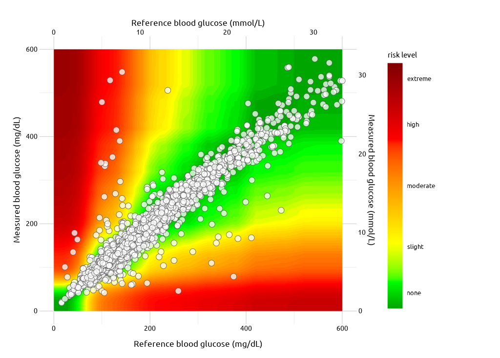

SEG Graph
seg-graph.RmdThe Surveillance Error Grid graph displays 1) measured blood glucose monitor and 2) reference values against the backdrop of a continuous color spectrum, or grid:
“A grid was created for each respondent, such that each point on the grid represented a data pair consisting of reference glucose on the x-axis and measured glucose on the y-axis. Each data point was then integrated and averaged for the entire set of respondents such that for the overall consensus error grid each data point could be assigned a unique mean score according to the mean perception of clinical risk for that data pair. This calculation created a gradual spectrum of risk within each risk zone that was defined by a range of risk scores” - The Surveillance Error Grid (doi: 10.1177/1932296814539589)
Use
Below I’ll load an example dataset, FullSampleData
FullSampleData <- segtools::get_seg_data(data = "FullSampleData")
dplyr::glimpse(FullSampleData)
#> Rows: 7,857
#> Columns: 2
#> $ BGM <dbl> 121, 212, 161, 191, 189, 293, 130, 147, 83, 132, 146, 249, 119, 15…
#> $ REF <dbl> 127, 223, 166, 205, 210, 296, 142, 148, 81, 131, 155, 254, 125, 14…FullSampleData has two columns: BGM
contains blood glucose monitor values and REF contains
reference values.
To build the SEG graph, the seg_graph() function needs
the input data (FullSampleData)
seg_graph(
data = FullSampleData)
There are also four optional aesthetic arguments:
seg_graph(
data = FullSampleData,
alpha_var = 3/4,
size_var = 3,
color_var = "#03396c",
fill_var = "#BBEEFF")
Interpretation
The points in SEG graph that fall along a linear path or ‘identity line’ (bottom-left to upper-right) have minimal risk, whereas points that approach the upper-left and bottom-right corners of the graph have greater risk.
“The spectrum of risk fanned out from no risk whatsoever (the identity line between measured and reference measurements) toward the greatest risk where the 2 measurements were maximally divergent.” - The Surveillance Error Grid (doi: 10.1177/1932296814539589)